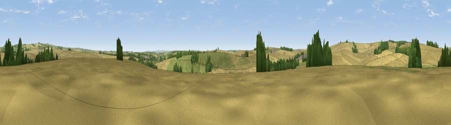

Viewpoint near White Lackington
#32442 in England · top 74% of its area beats it · near White LackingtonWhere it is
The exact computed spot (SY 70225 97725). Click the marker for map links.
The view, rendered

A 360° render of this exact spot computed from the terrain model, tree cover and land cover — summer colours, afternoon light, calibrated against photographs of famous viewpoints. Real trees, hedges and buildings will differ in detail.
The panorama
Grey silhouette: terrain skyline in each direction (720 bearings, Earth curvature and refraction included). Dashed green: skyline with trees (+15 m) and buildings (+8 m) as obstacles. Blue strip: how far the ground is visible on each bearing.
Where the view opens
Wedge length = distance to the farthest visible ground on that bearing (vegetation-aware). Rings at 10, 25 and 50 km.
What fills the view
71% cropland · 24% grassland · 5% woodland ·
Angular shares of the visible panorama (visual magnitude), not map area. Landscape diversity 0.33 (0–1 Shannon).
Key numbers
More beautiful places nearby
The staircase of upgrades: each row has a higher view potential than everything closer. Driving times are estimates from straight-line distance, calibrated against real road routing — check an actual route before setting out.
| Place | Direction | Drive | Score |
|---|---|---|---|
| Viewpoint near Piddlehinton | S · 2 km | ~5 min | 47.2 |
| Viewpoint near Godmanstone | W · 2 km | ~6 min | 54.1 |
| Viewpoint near Cerne Abbas | NW · 4 km | ~9 min | 59.6 |
| Viewpoint near Cerne Abbas | NNW · 5 km | ~10 min | 59.9 |
| Lyscombe Hill | NE · 6 km | ~13 min | 70.5 |
| Viewpoint near Hilfield | NW · 9 km | ~19 min | 71.6 |
| Viewpoint near Woolland | NE · 11 km | ~21 min | 74.5 |
| Viewpoint near Upwey | SSW · 12 km | ~22 min | 77.6 |
50.77833, -2.42367 · source: screening · position refined by local search. Computed location — check access rights before visiting.